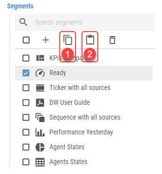
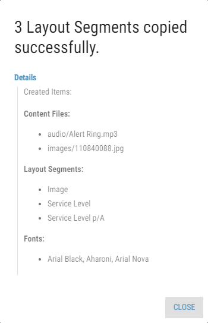

Copying¶
To simplify the creation of identical or similar Segments, copy functionality is provided. Any existing Segment can be copied. Also, multiple copies can be created at the same time. Once copied, the Segment can then be pasted into other Layout.
- Segments can be copied in one of three ways:
Navigating to the Layout panel, selecting one or multiple Segments in the Segments list and clicking the copy button.
Selecting a specific Segment and clicking the button, located on the top of its panel.
Selecting a specific Segment and using a Ctrl + c shortcut.
Copied Segment or Segments are saved to clipboard. The clipboard is shared between all tabs and windows of the same browser. Therefore Segments can be copied to other Layouts, as long as each Layout is opened in a separate tab or window. This way Segments can be even copied to Layouts from different Business Unit.
Exiting the Edit mode of a Layout from which the last copy operation was performed will clear the clipboard. The user will be warned and asked to confirm such action.
Figure 1: Copy and Paste buttons
Copy button
Paste button
Clicking the button or using a Ctrl + v shortcut will open a paste dialog containing the following options:
- Number of Copies
The number of copies that will be pasted.
- Keep Parameters
Whether the calculation parameters in Layout should be copied. If enabled, parameters of every calculation, located in the Layout are copied.
- Keep Notification Message Recipients
Whether the notification message recipients in Layout should be copied.
These options are available only when copying Segment into Layout in another Business Unit:
- Copy Notification Message Templates
Whether notification message templates used by the Layout should also be copied.
- Content Files
Whether content files, such as audio files, pdf files or images used in the Layout should be copied. Available options are:
- Do Not Copy
The content files will not be copied.
If copied Layout contains sources which references content from its own Business Unit the final Layout will be marked as invalid unless default value is applicable. For administrators, invalid Layouts are marked red in the Layout list. Any other users are not able to see invalid Layouts in the Layout list.
- Copy And Replace If Exists
The content files will be copied. If there are already files with the same name but different size in the target Business Unit, they will be replaced.
- Copy And Rename If Exists
The content files will be copied. If there are already files with the same name but different size in the target Business Unit, copied files will be numbered (adding “(xyz)” at the end of the file name).
- Copy If Not Exists
The content files will be copied. If there are already files with the same name but different size in the target Business Unit, the content files will not be copied.
The pasted Segment is the exact copy of the original Segment at the time of the pasting, not copying. That means, that changes made to the original Segment between copying and pasting are also copied. Consequently when original Segment is deleted, it can’t be pasted anymore.
Layout’s Segments, Ticker’s Items and Sequence Item’s can be copied between each other. For example copied Ticker’s Item can be pasted as Sequence’s Item or Layout’s Segment.
When the Segment copying is done, a report dialog appears. This dialog has only informative character. By clicking on detail, all copied Segments, content files and other associated entities are listed.
Figure 2: Copy report
Copying Enums - During copying of Segments into another Business Unit, enumerations with the same configuration are used if found. Otherwise, new record is created as a copy of source enumeration. Two display formats are configured the same way if both have the same format.
Copying Notification Channels - During copying of notification channels into another Business Unit, notification channels of the same type are used if found. Otherwise, new channel is created. Settings of newly created channels have to be configured manually.